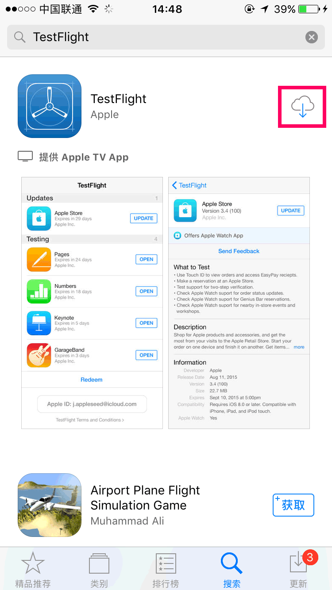
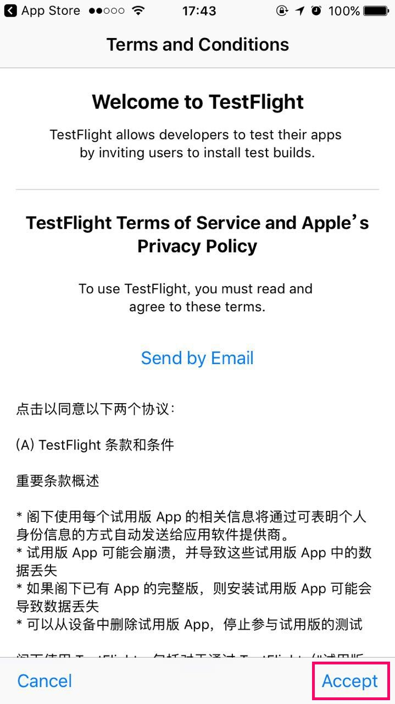
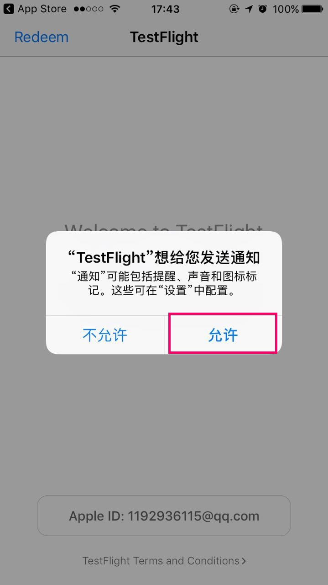
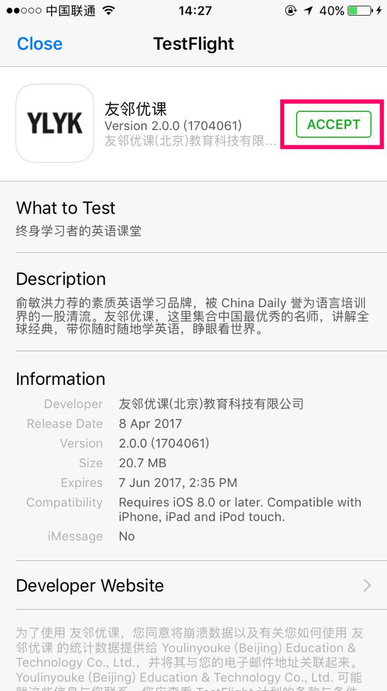
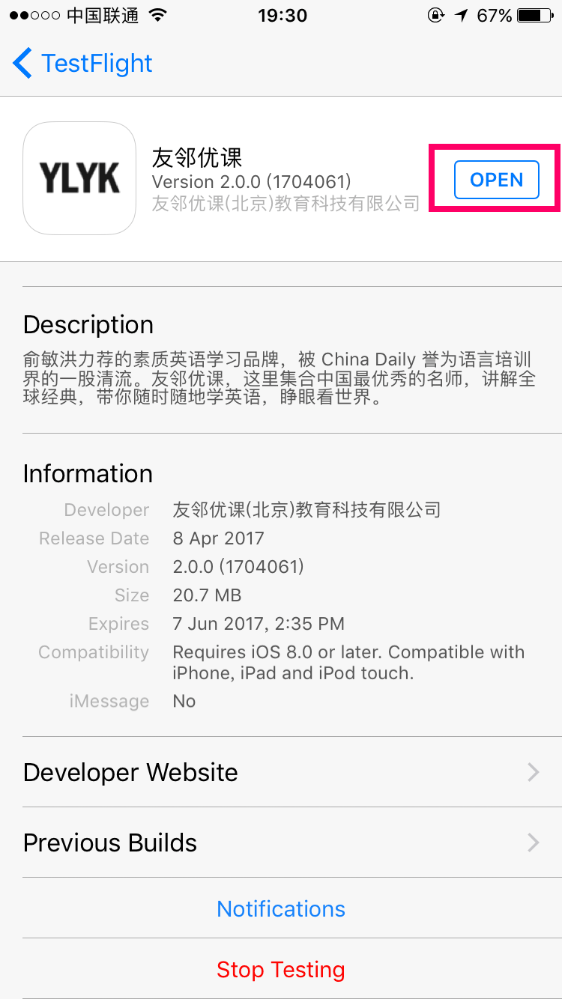

一、安装TestFlight
在AppStore内搜索“TestFlight”，安装并打开TestFlight；

APP打开后，点击【Accept】同意许可协议。如应用提示是否允许发送通知，点击【允许】。这样可以第一时间收到版本更新推送。


二、接受测试邀请
收到邀请邮件后，用手机打开AppleID对应的邮箱-->点击测试邀请邮件；邮件打开后，点击【view in TestFlight】按钮，即可跳转到TestFlight。


三、安装并使用APP
在TestFlight打开的页面上点击【ACCEPT】-->【INSTALL】。安装完成后，点击【OPEN】即可开始使用APP。安装成功的APP也可在主屏幕找到。

